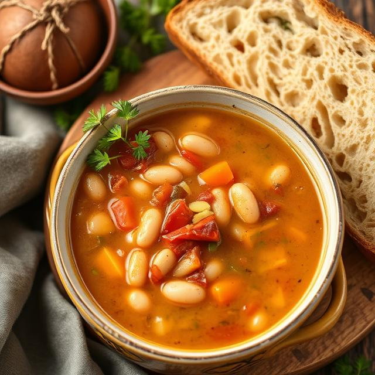

Bean Soup

Hearty Bean Soup – Comfort in a Bow
This rich and nourishing bean soup is packed with wholesome ingredients
and deep flavors. Made with a mix of kidney beans, white beans, and fresh
vegetables simmered in a flavorful broth, it’s the perfect dish for chilly
days. Serve it with crusty bread for a satisfying, protein-rich meal.
Ingredients
- 15 ml olive oil
- 1 onion, finely chopped
- 2 carrots, diced
- 2 celery stalks, chopped
- 3 garlic cloves, minced
- 400 g diced tomatoes
- 1.2 l vegetable broth
- 400 g kidney beans, drained and rinsed
- 400 g white beans, drained and rinsed
- 5 g salt
- 2 g black pepper
- 5 g smoked paprika (optional)
- 2 g dried thyme
- 1 bay leaf
To serve
- Fresh parsley, chopped
- Crusty bread
Instructions
-
Sauté the Vegetables – Heat olive oil in a large pot over medium heat.
Add onion, carrots, and celery. Cook for 5 minutes until softened.
-
Add Garlic & Spices – Stir in minced garlic, salt, black pepper,
paprika, and thyme. Cook for 1 minute.
-
Simmer the Soup – Pour in diced tomatoes, vegetable broth, and add the
bay leaf. Bring to a boil, then reduce heat and simmer for 20 minutes.
-
Add Beans – Stir in the kidney beans and white beans. Simmer for another
10 minutes.
-
Final Touch – Remove the bay leaf, adjust seasoning, and garnish with
fresh parsley.
- Serve & Enjoy – Ladle into bowls and serve hot with crusty bread.
This soup tastes even better the next day as the flavors meld together.
Enjoy your cozy, homemade bean soup! 😊🍲
Home